背景
我有时候想捣鼓个工具用。起初是为了让我及时掌握一些信息，想做一个消息推送功能。但是由于功能简单，不想单独开发个手机 APP。于是就想着能否直接把消息推送到个人微信上。
面临的问题
以前有 web 版的个人微信，有些人就基于 web 版的个人微信接口做了一个开发套件。但是现在 web 版只有少数一些微信号能够登录，我就登录不了。
另一种方式是申请公众号，使用公众号的消息推送。但是公众号主要是对关注者的，只用来给我自己推送消息不太合适。而如果在公众号上增加一些其他功能，等于是把功能开放给所有关注的人了，没什么必要。
后来我才知道公众号的消息推送有次数限制，不过对于个人使用已经足够了。
最终采取的方案是通过企业微信把消息推送到个人微信。
实现后的消息流向
个人微信 -> 企业微信 -> 个人服务器
个人微信 <- 企业微信 <- 个人服务器
实现步骤
- 在企业微信手机端上创建企业（不会核实真实企业）
- 在企业微信web端管理页面通过个人微信扫码绑定企业的微信插件
- 在web端管理页面上创建应用
- 在个人服务器上启动服务
- web端管理页面设置应用接收信息的 API 地址
- 在个人微信上收发消息
1. 在企业微信上创建企业
以手机企业微信为例，菜单依次如下：
我 | 设置 | 管理企业 | 全新创建企业 | 企业
- 填写企业名称
- 行业类型根据需要选择
- 员工规模选择1-50人
- 真实姓名填写自己的姓名
点击创建就能创建成功了。
2. 绑定插件
上一步创建企业后，会自动将当前帐号切换到这个企业（之后可以来回切换）。
电脑浏览器访问：
https://work.weixin.qq.com/wework_admin/frame#profile/wxPlugin
在切换到新创建的企业后，用企业微信的扫码登录。
登录后会自动跳转到【微信插件】功能页。可以看到下图那样的页面。
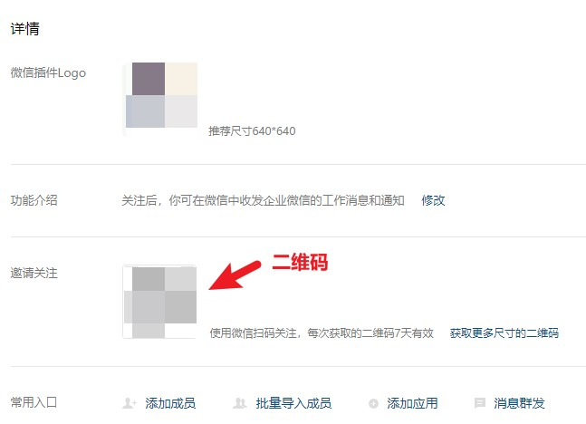
用个人微信扫【邀请关注】一栏的二维码。关注后，个人微信会绑定该企业。如果企业微信加入了多个企业（如正在任职的企业），不用担心会绑定到这些企业上。
3. 创建应用
电脑浏览器访问：
https://work.weixin.qq.com/wework_admin/frame#apps
进入应用管理模块。
依次访问：
应用 | 自建 | 创建应用
如下图：
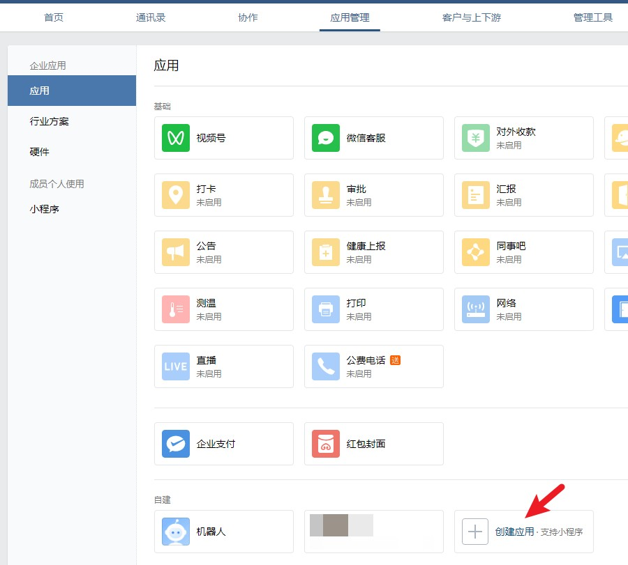
填写页面要求的信息，记得在可见范围里把自己选上。
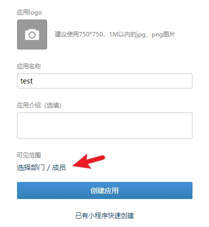
创建成功后，进入应用页面可以看到以下信息：
- AgentId
- Secret
- 功能 | 接收消息 | 设置API接收
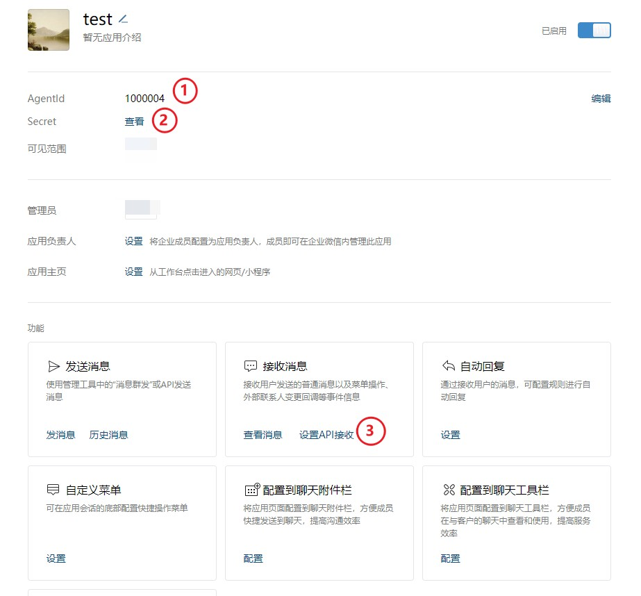
其中标记 2 的 Secret 是企业的密码。在请求企业微信接口的时候，要使用企业 ID 和应用密码获取 Token。
接着进入应用页面里标记 3 的【设置API接收】。
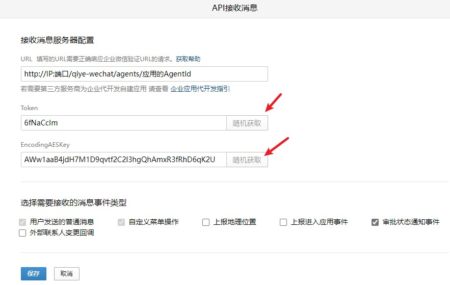
注意这里的 Token 仅用于计算签名，和请求企业微信接口时用于验证身份的 Token 不是同一个，因此随机获取就行。
URL 按以下格式填写：
1 | http://IP:端口/qiye-wechat/agents/应用的AgentId |
这里的 IP 和端口设置为个人服务器的 IP，以及即将在下一步启动服务时开放的端口。
Token 和 EncodingAESKey 随机获取或者自己填都行。
填完之后先不点保存，等到下一步【启动服务】执行完后再保存。因为保存的时候。企业微信会向上面的 URL 发送一个请求验证。
4. 启动服务
登录个人服务器，下载下面这个项目：
https://github.com/schaepher/noty
进入项目文件夹，复制一份 config.json.example 到 config.json。初始内容为：
1 | { |
corp_id 是企业的 ID。通过以下链接页面底部获取：
https://work.weixin.qq.com/wework_admin/frame#profile
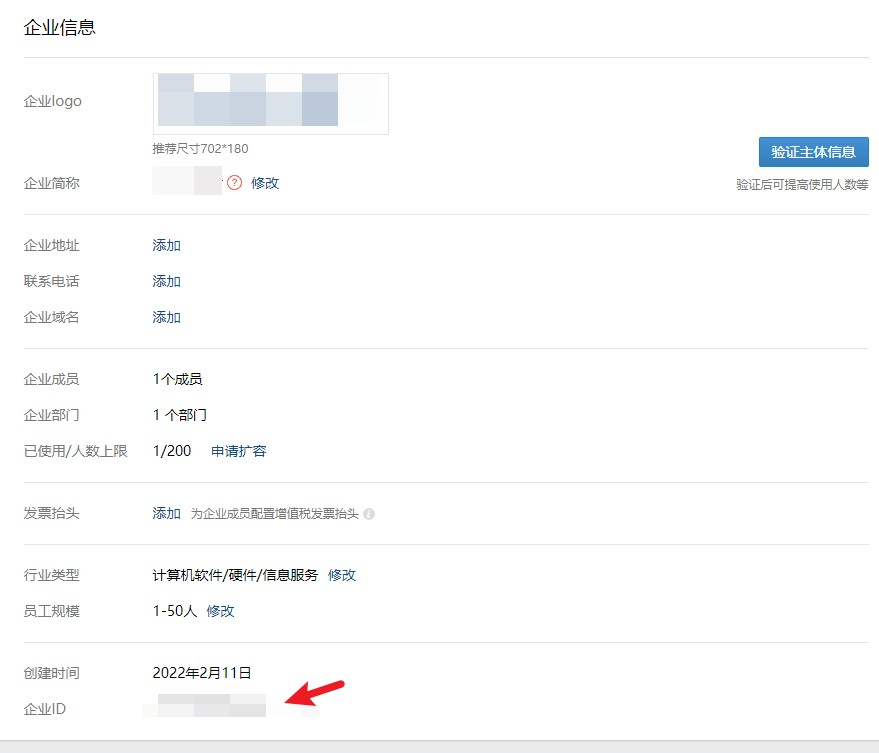
在 agents 里面，填写刚刚创建的应用的信息。其中 secret 是通过应用界面的 Secret 一栏进入获取的。也就是下图的标记 2。
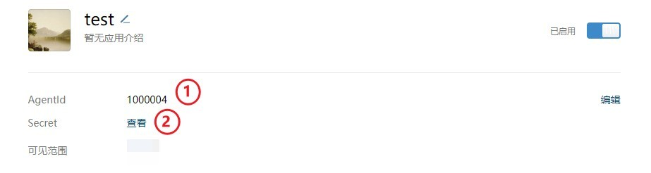
type 是 agent 类型，与企业微信无关，与本项目 qiyewechat 文件夹里 agent.go 的 AgentFactory 有关。默认为 echo，作用是个人微信发什么，服务器就返回什么。
接下来是编译和运行。
1 | go build |
5. 配置企业微信
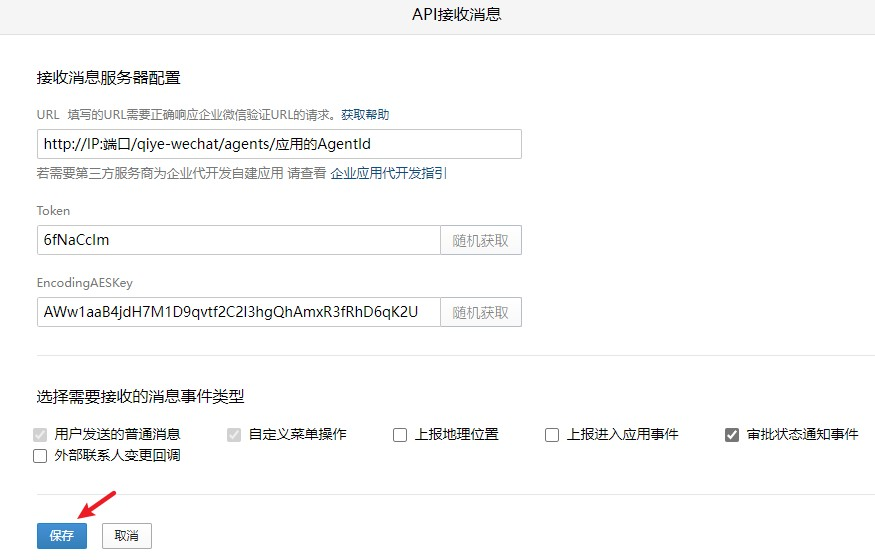
回到刚才的【设置API接收】界面，点击保存。此时企业微信会发一条验证信息到服务器，如果通过，就能成功保存。
保存成功后，在这个页面下方的【企业可信IP】卡片里选择配置，将刚刚填入到 URL 的服务器 IP 添加进去。这样之后服务器才能主动调用企业微信的 API。

6. 个人微信收发消息
在个人微信的【我的企业及企业联系人】分组中，找到企业。进入后可以看到应用，发送消息即可。
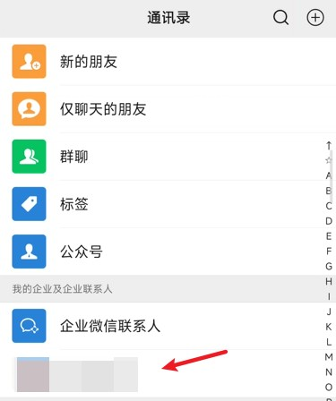
↓
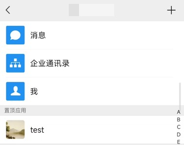
↓
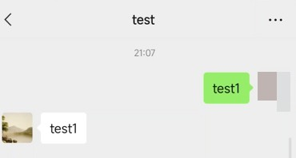